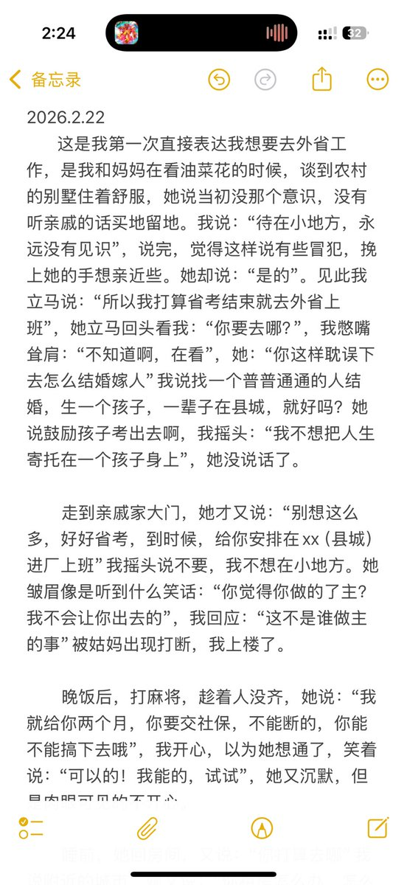
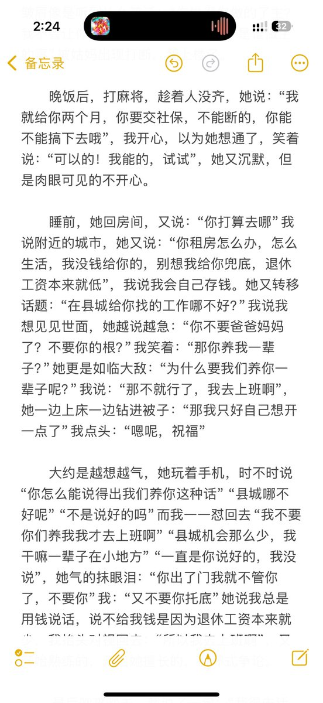
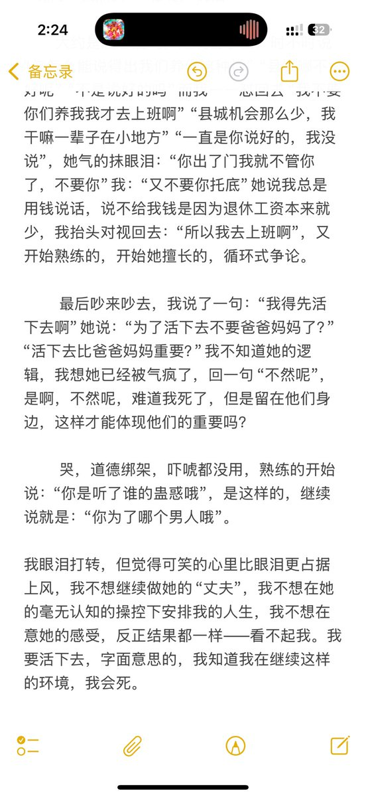

dalin
@ZhiJiang0624
@caomeix04231621 我也想职校毕业就去打工了



椰椰椰椰奶小羊
@caomeix04231621
我怕自己又忘记争吵，所以趁热打铁记录。因为出去工作的事，不能再心软被她说服了。其实正如她问的，我能不能在外面存活，我也觉得是问号。我害怕，再加上她说的不会给我钱租房兜底。可我想活下去的，我不要郁郁寡欢，不要躲在房间酗酒自残，盘算自杀。 https://t.co/lJqIQDNyd3